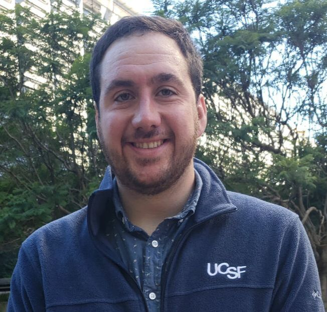

Chris Mathy
Graduate Student
In the lab: 2017–2022
Now: Postdoc, Stanford
I'm interested in how organisms finely control system-wide behavior by tuning of protein structure, dynamics, and interactions. My current work is on the small GTPase Ran/Gsp1, looking into how its key partners regulate Gsp1 cycling to allow for different behavior in several cellular pathways.
Education
- Bachelor of Science, Bioengineering, Stanford
Publications
- Mathy, C. J. P. & Kortemme, T. Emerging maps of allosteric regulation in cellular networks. Curr. Opin. Struct. Biol. 80, 102602 (2023).
- Mathy, C. J. P., Mishra, P., Flynn, J. M., Perica, T., Mavor, D., Bolon, D. N. A. & Kortemme, T. A complete allosteric map of a GTPase switch in its native cellular network. Cell Syst. 14, 237–246.e7 (2023).
- Baker, J. J., Mathy, C. J. P. & Schaletzky, J. A proposed workflow for proactive virus surveillance and prediction of variants for vaccine design. PLoS Comput. Biol. 17, e1009624 (2021).
- Perica, T.*, Mathy, C. J. P.*, Xu, J., Jang, G. M., Zhang, Y., Kaake, R., Ollikainen, N., Braberg, H., Swaney, D. L., Lambright, D. G., Kelly, M. J. S., Krogan, N. J. & Kortemme, T. Systems-level effects of allosteric perturbations to a model molecular switch. Nature 599, 152–157 (2021).
- Bouhaddou, M., Memon, D., Meyer, B., White, K. M., Rezelj, V. V., Correa Marrero, M., Polacco, B. J., Melnyk, J. E., Ulferts, S., Kaake, R. M., Batra, J., Richards, A. L., Stevenson, E., Gordon, D. E., Rojc, A., Obernier, K., Fabius, J. M., Soucheray, M., Miorin, L., Moreno, E., Koh, C., Tran, Q. D., Hardy, A., Robinot, R., Vallet, T., Nilsson-Payant, B. E., Hernandez-Armenta, C., Dunham, A., Weigang, S., Knerr, J., Modak, M., Quintero, D., Zhou, Y., Dugourd, A., Valdeolivas, A., Patil, T., Li, Q., Hüttenhain, R., Cakir, M., Muralidharan, M., Kim, M., Jang, G., Tutuncuoglu, B., Hiatt, J., Guo, J. Z., Xu, J., Bouhaddou, S., Mathy, C. J. P., Gaulton, A., Manners, E. J., Félix, E., Shi, Y., Goff, M., Lim, J. K., McBride, T., O’Neal, M. C., Cai, Y., Chang, J. C. J., Broadhurst, D. J., Klippsten, S., De wit, E., Leach, A. R., Kortemme, T., Shoichet, B., Ott, M., Saez-Rodriguez, J., tenOever, B. R., Mullins, R. D., Fischer, E. R., Kochs, G., Grosse, R., García-Sastre, A., Vignuzzi, M., Johnson, J. R., Shokat, K. M., Swaney, D. L., Beltrao, P. & Krogan, N. J. The Global Phosphorylation Landscape of SARS-CoV-2 Infection. Cell 182, 685–712.e19 (2020).
- Gordon, D. E., Jang, G. M., Bouhaddou, M., Xu, J., Obernier, K., White, K. M., O’Meara, M. J., Rezelj, V. V., Guo, J. Z., Swaney, D. L., Tummino, T. A., Hüttenhain, R., Kaake, R. M., Richards, A. L., Tutuncuoglu, B., Foussard, H., Batra, J., Haas, K., Modak, M., Kim, M., Haas, P., Polacco, B. J., Braberg, H., Fabius, J. M., Eckhardt, M., Soucheray, M., Bennett, M. J., Cakir, M., McGregor, M. J., Li, Q., Meyer, B., Roesch, F., Vallet, T., Mac Kain, A., Miorin, L., Moreno, E., Naing, Z. Z. C., Zhou, Y., Peng, S., Shi, Y., Zhang, Z., Shen, W., Kirby, I. T., Melnyk, J. E., Chorba, J. S., Lou, K., Dai, S. A., Barrio-Hernandez, I., Memon, D., Hernandez-Armenta, C., Lyu, J., Mathy, C. J. P., Perica, T., Pilla, K. B., Ganesan, S. J., Saltzberg, D. J., Rakesh, R., Liu, X., Rosenthal, S. B., Calviello, L., Venkataramanan, S., Liboy-Lugo, J., Lin, Y., Huang, X.-P., Liu, Y., Wankowicz, S. A., Bohn, M., Safari, M., Ugur, F. S., Koh, C., Savar, N. S., Tran, Q. D., Shengjuler, D., Fletcher, S. J., O’Neal, M. C., Cai, Y., Chang, J. C. J., Broadhurst, D. J., Klippsten, S., Sharp, P. P., Wenzell, N. A., Kuzuoglu-Ozturk, D., Wang, H.-Y., Trenker, R., Young, J. M., Cavero, D. A., Hiatt, J., Roth, T. L., Rathore, U., Subramanian, A., Noack, J., Hubert, M., Stroud, R. M., Frankel, A. D., Rosenberg, O. S., Verba, K. A., Agard, D. A., Ott, M., Emerman, M., Jura, N., von Zastrow, M., Verdin, E., Ashworth, A., Schwartz, O., d’Enfert, C., Mukherjee, S., Jacobson, M., Malik, H. S., Fujimori, D. G., Ideker, T., Craik, C. S., Floor, S. N., Fraser, J. S., Gross, J. D., Sali, A., Roth, B. L., Ruggero, D., Taunton, J., Kortemme, T., Beltrao, P., Vignuzzi, M., García-Sastre, A., Shokat, K. M., Shoichet, B. K. & Krogan, N. J. A SARS-CoV-2 protein interaction map reveals targets for drug repurposing. Nature 583, 459–468 (2020).
* Co-first authors